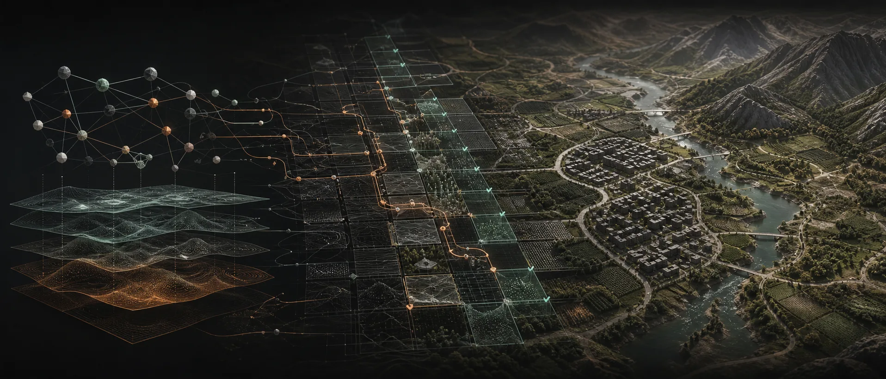
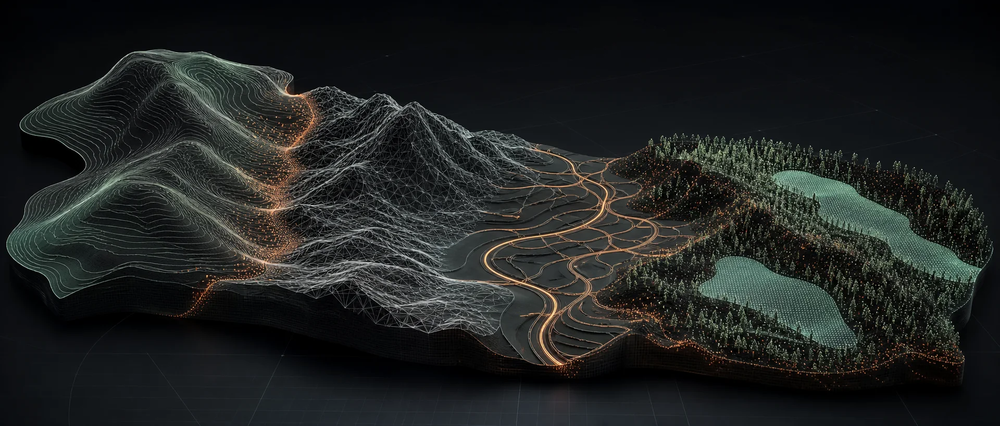
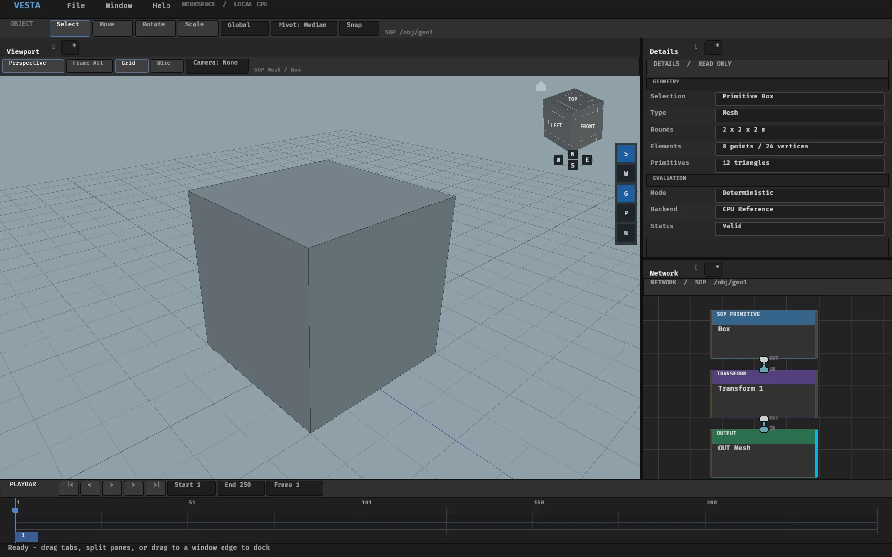
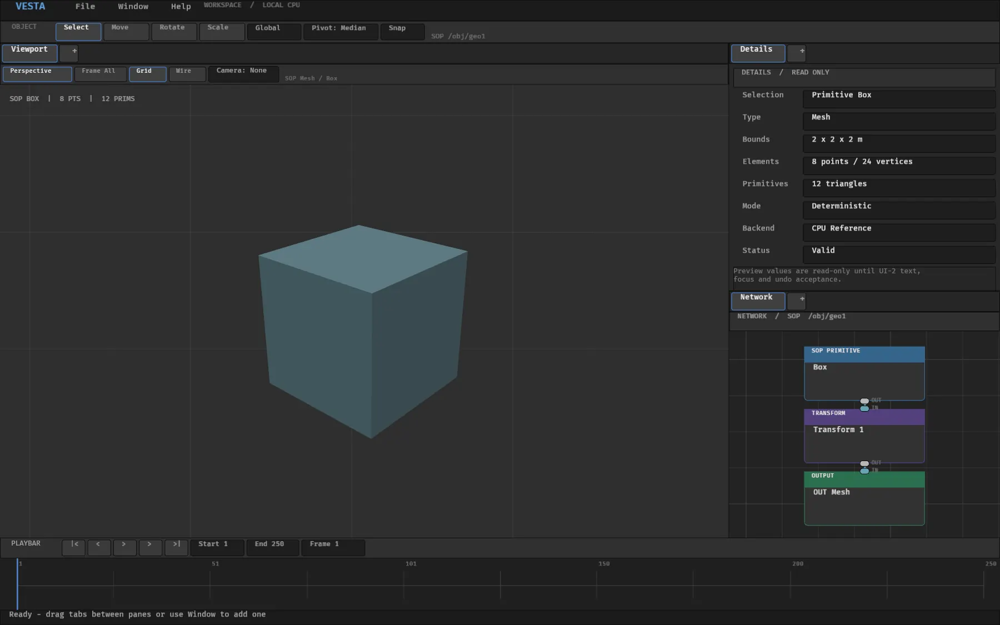
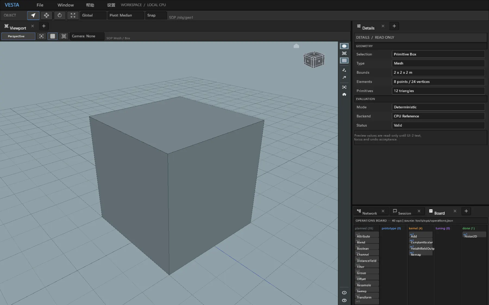

类型即语义
端口与数据保持明确含义，不退化成通用属性集合。
V / 01引擎无关的程序化世界系统
Vesta 是一套引擎无关的程序化世界构建与空间计算系统，用同一张类型化 Graph 连接地形、道路、城市、建筑与生态系统。
01 / 产品
地形、几何、栅格处理、资产放置与引擎交付通常分散在不同工具中。Vesta 用一份权威 Graph 与一套执行模型把它们连接起来。
Vesta 的核心定义
端口与数据保持明确含义，不退化成通用属性集合。
版本化语义、显式 Seed 与确定性执行让结果长期可靠。
同一套 Core 服务于 Studio、CLI、Worker 与未来的引擎适配器。
02系统链路
每次请求只走一条可观察的执行链。不隐藏引擎分支，也不复制节点语义。

类型化端口、稳定身份与版本化参数。
只有结构化诊断通过，才允许生成计划。
显式后端、范围、LOD、Seed、预算与缓存。
向 Studio、CLI、Worker 或引擎适配器返回不可变类型化结果。
03统一空间数据
Heightfield 不是普通图片，Mask 也不是 Field。Vesta 显式保留它们的语义，同时让所有数据进入同一套类型化 Graph 与求值模型。
Point、Vertex、Primitive 与类型化 Attribute
单位、范围、分辨率与 Halo 感知求值
显式通道、数值范围、坐标与转换语义
为道路、放置和空间组合提供稳定元素

03 / B从数据到领域
通用算子保持复用，领域包在其上加入必要规则，让地形、基础设施、建筑与生态系统彼此协调。
04Vesta Studio
Studio 是围绕同一套 Core 构建的创作宿主，自动化与未来的引擎适配器也使用这套 Core。工作区、Dock、视口、CPU 参考预览与算子开发工具已经运行；创作能力与输入门禁仍在持续推进。

真实 Vesta Studio 截图——界面与工作流仍在持续演进。

类型化 SOP 链、详情数据与 CPU 参考结果在同一工作区内可见。

Dock、视口控制、图标与算子状态遵循同一套视觉体系。
Rust + Bevy/wgpu 应用
UI 不拥有第二套 Graph Runtime
长时间求值不会阻塞 UI 主线程
04 / B当前可用
当前构建已经能够让作者 Graph 经过验证、规划、确定性 CPU 执行、缓存、预览与导出。
Source、Schema、验证与编译
后端分配、范围、LOD、Seed 与预算
确定性求值与协作式取消
感知请求、内容寻址的可复用结果
加载、验证、规划、执行与导出
Dock、视口、Graph 工具与 CPU 预览
05架构
Vesta 分离作者数据、执行计划与生成结果。宿主表达意图，Core 拥有语义，Backend 只执行准备完成的 Invocation。
宿主
权威 Core
ENGINE INDEPENDENT执行后端
类型化结果
05 / B开发路线
路线会先建立确定性行为与创作基础，再逐步扩大集成边界。
当前可用
版本化 Graph Source、验证、编译、显式后端分配、确定性 CPU 求值、内容寻址缓存与 CLI 全链路。
持续推进
桌面工作区、视口与 Graph 工作流、性能、算子对齐，以及尚未完成的交互验收门禁。
下一阶段
版本化 SDK/C ABI、第一条 Unreal 垂直切片，以及位于显式契约之后的 GPU 后端验证。
VESTAVesta / 技术预览
私有技术预览正在准备中。
返回顶部